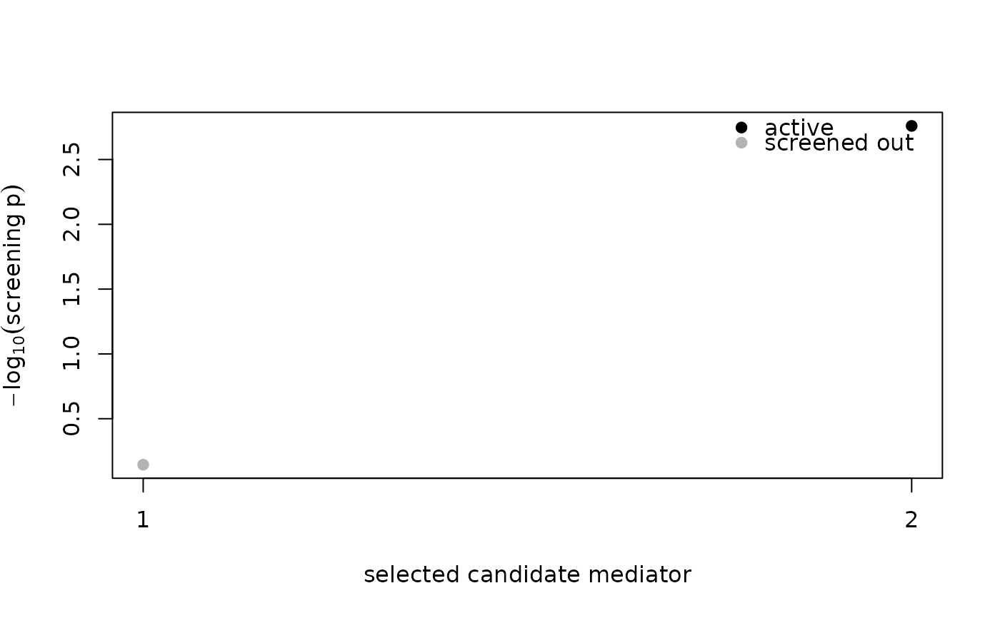

A base-graphics plot for the two kinds of table POEMED returns. For a
power curve from pe_power_curve() it draws the empirical rejection
rate of the benchmark and power-enhanced tests against the
signal-strength grid, with the nominal level marked. For a single
pe_mediation() fit it draws the per-mediator screening evidence
(\(-\log_{10}\) of the screening p-value) for each selected
candidate mediator, with the active ones highlighted, so it is clear
which mediators drove the result.
Usage
# S3 method for class 'poemed_tbl'
plot(x, ...)Arguments
- x
A
poemed_tblfrompe_power_curve()orpe_mediation().- ...
Further graphical parameters passed to the underlying plot.
Examples
set.seed(113)
d <- simulate_mediation_data(n = 200, p = 60, outcome = "continuous",
pattern = "contrasting", c1 = 1)
fit <- pe_mediation(d$X, d$Y, d$M, outcome = "continuous")
plot(fit)
